|
You are here : Control System Design - Index | Book Contents | Appendix D | Section D.5 D. Properties of Continuous Time Riccati EquationD.5 Duality between linear quadratic regulator and optimal linear filterThe close connections between the optimal filter and the LQR problem can be expressed directly as follows: we consider the problem of estimating a particular linear combination of the states, namely
(The final solution will turn out to be independent of f and thus will hold for the complete state vector.) Now we will estimate z(t) using a linear filter of the form
where h(t) is the impulse response of the filter, and where 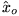 is a given estimate of the initial state. Indeed, we will assume that (22.10.17) holds, i.e. the initial state x(0) satisfies
We will be interested in designing the filter impulse response,
Equation (D.5.4) is somewhat difficult to deal with, because of the cross product between 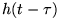 and x(t) in the integral. Hence, we introduce another variable 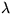 using the following equation
where 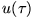 is the reverse time form of h, i.e.
Substituting (D.5.5) into (D.5.4) gives
Using integration by parts, we then obtain
Finally, using (22.10.5) and (D.5.6), we obtain
Hence, squaring and taking mathematical expectations, we obtain (on using (D.5.3), (22.10.3) and (22.10.4) ):
The last term in (D.5.10) is zero if 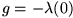. Then, we see that the design of the optimal linear filter can be achieved by minimizing
where 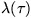 satisfies the reverse time equations (D.5.5) and (D.5.6). We recognize the set of equations formed by (D.5.5), (D.5.6) and (D.5.12) as a standard linear regulator problem, provided the connections shown in Table D.1 are made. Table 1.1: Duality in quadratic regulators and filters
Finally, using the (dual) optimal control results presented earlier, we see that the optimal filter is given by
where
and 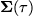 satisfies the dual form of (D.0.1), (22.4.18), i.e. 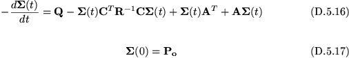 Substituting (D.5.14) into (D.5.5), (D.5.6) we see that 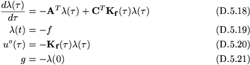 We see that 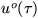 is the output of a linear homogeneous equation. Let 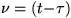 and define 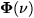 as the state transition matrix from 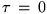 for the time varying system having A - matrix equal to 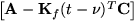. Then
Hence the optimal filter satisfies
where
We then observe that (D.5.24) is actually the solution of the following state space (optimal filter). 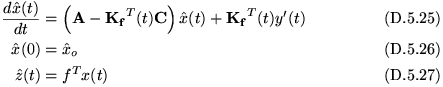 We see that the final solution depends on f only through (D.5.27). Thus, as predicted, (D.5.25), (D.5.26) can be used to generate an optimal estimate of any linear combination of states. Of course, the optimal filter (D.5.25) is identical to that given in (22.10.23). All of the properties of the optimal filter follow by analogy from the (dual) optimal linear regulator. In particular, we observe that (D.5.16) and (D.5.17) are a CTDRE and its boundary condition, respectively. The only difference is that, in the optimal filter case, this equation has to be solved forward in time. Also, (D.5.16) has an associated CTARE, given by
Thus, the existence, uniqueness and properties of stabilizing solutions for (D.5.16) and (D.5.28), satisfy the same conditions as the corresponding Riccati equations for the optimal regulator. |